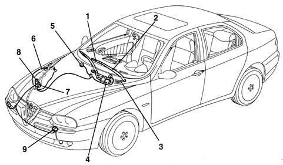
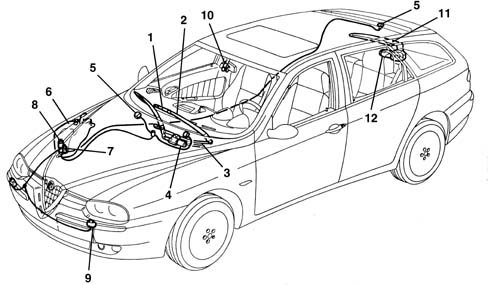
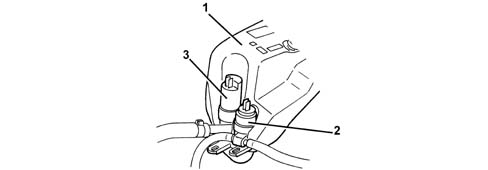
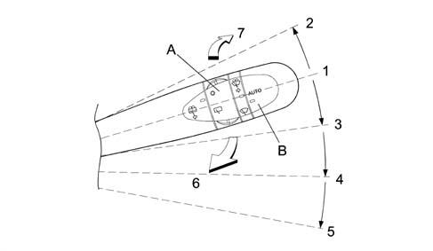
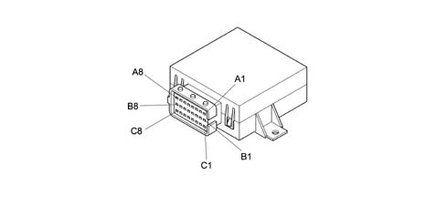
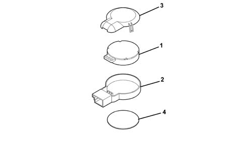
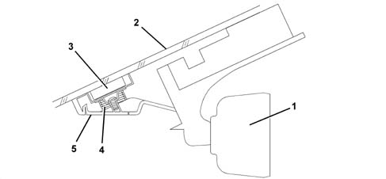

Introduction - SCREEN WASHERS AND HEADLAMP WASH/WIPE
- Path
- Descriptions > 50 AUXILIARY UNITS > 5050 SCREEN WASHERS AND HEADLAMP WASH/WIPE > Introduction - SCREEN WASHERS AND HEADLAMP WASH/WIPE
- Kind
- system description
- Applies to
- all engines; all production periods
- Interactive page
- https://sloeber94.github.io/elrnDB-a156/en/#/3239224
Applies to: all engines; all production periods
The system for cleaning the windscreen and the headlamps makes use of the following components:
- windscreen wiper
- windscreen washer
- headlamp washer

1, Windscreen wiper blade 2, Wiper arm 3, Windscreen wiper mechanism 4, Windscreen wiper motor 5, Windscreen washer jets 6, Reservoir 7, Windscreen washer pump 8, Headlamp washer pump 9, Headlamp washer jets
Windscreen wiper
The windscreen wiper mechanism has been developed to ensure optimum cleaning of the area covered by the wipers and to allow the blades to always work in the correct conditions (wiping angle, pressure on the windscreen).
The windscreen wipers are operated by a lever on the right of the steering wheel and can assume five positions:
- windscreen wiper off
- intermittent operation;
- continuous slow operation;
- continuous medium - fast operation
- temporary fast operation (unstable stalk position).
When the stalk switch is set to intermittent operation position, four different speeds can be selected by turning the relevant ring:
Windscreen washer
The windscreen washer function is operated by pulling the lever gently towards the steering wheel. The electric pump is operated in this way and it sends fluid, under pressure, to the jets at the front of the windscreen.
If the lever is kept in this position, the windscreen wipers will come on constantly. When the lever is released, the windscreen wipers will continue to operate for several strokes.
Headlamp washer
The headlamp washer system consists of a special electric pump on the windscreen washer fluid reservoir, connecting pipes and two jets in the bumpers in front of the front light clusters.
The operation of the headlamp washers takes place automatically when the side lights are switched on and the windscreen washer is operated.
The electric pump is controlled by a timer which activates the operation with succesive impulses lasting around half a second.
Applies to: all engines; production: da 03/02 a 09/03, da 10/03
CONSTRUCTION FEATURES
The windscreen and headlamp wiper system makes use of the following components:
- windscreen wash/wipe
- rearscreen wash/wipe (Station Wagon)
- headlamp washer

1 - Windscreen wiper blade 2 - Wiper arm 3 - Windscreen wiper mechanism 4 - Windscreen wiper motor 5 - Windscreen washer jets 6 - Reservoir 7 - Windscreen washer pump 8 - Headlamp washer pump 9 - Headlamp washer jets 10 - Rain sensor 11 - Rearscreen wiper arm/blade 12 - Rearscreen wiper motor
Operating principle
When operating the right steering column switch unit lever, the driver sends the system control unit the activation and selection signals for the following components:
- front and rear windscreen wiper arm electric motors
- windscreen/rearscreen washer pump
- windscreen wiper speed in continuous operating mode
- windscreen wiper activation frequency in intermittent operating mode
- for versions equipped with a rain sensor, the intervention sensitivity
The control unit automatically manages:
- the 'smart washing' function
- the go ahead to the headlamp washer relay each time the windscreen washer is activated.
- if the vehicle is fitted with a rain sensor, the automatic operation of the windscreen wiper controlled by the rain sensor.
the activation of the rearscreen wiper when reverse gear is engaged on condition that the windscreen wiper was already activated previously (Staion Wagon).
WINDSCREEN WASHER AND HEADLAMP WASHER RESERVOIR
Operation
The reservoir, located on the right side panel under the wing, supplies the windscreen washer system pump with the necessary water/anti-freeze mixture for cleaning the front windscreen and (on the S.W. version only) the rearscreen; in addition, if the vehicle is equipped with headlamp washers, it also supplies this system through a special pump. in addition, if the vehicle is equipped with headlamp washers, it also supplies this system through a special pump.
Structure
The reservoir, made from plastic, is equipped with a level sensor and outside housings for the windscreen washer and headlamp washer pumps (if fitted).

1 - Windscreen washer fluid reservoir 2 - Two-way pump supplying fluid to the jets 3 - Headlamp washer system pump (if fitted)
FRONT WINDSCREEN WASH/WIPE
Operation
The front windscreen wash/wipe assembly has the task of cleaning and washing the front windscreen.
There are two types, according to the trim level of the vehicle, standard or de-luxe, which differ considerably through the availability as optional on the de-luxe version of an electronic device for detecting the presence of drops of water on the windscreen (rain sensor).
Thanks to the control electronics and according to the position of the right steering column switch unit lever, the system is capable of managing the operation of the direct current type windscreen wiper motor with two windings, i.e. two rotation speeds:
- Low speed: 53 ± 5 rpm
- High speed: 73 ± 5 rpm
In the continuous operation condition the number of revs per minute corresponds to the number of blade strokes.
The rain sensor allows the automatic operation of the system in weather conditions where the driver would be continuously and repeatedly having to operate the system.
The 'smart' washing strategy guaranteed by the control electronics allows the elimination of the residual traces of windscreen washer fluid which are normally left at the end of a traditional windscreen wash/wipe system cycle.
Composition
The system is equipped with:
- a single control unit for both vehicles fitted with a rain sensor and those without this optional device;
- an (optional) electronic sensor which detects rain conditions located under the interior rear view mirror in the area cleaned by the wiper blades.
Operation
The front windscreen wash/wipe system is activated via the right lever on the steering column switch unit and there are four possible operating modes:
Anti-panic (unstable upwards stalk position)
Intermittent (4 speeds) or (if the rain sensor is fitted) automatic with an intervention sensitivity setting which can be altered
First continuous speed (slow)
Second continuous speed (fast)

1 - Rest position 2 - Fast operation (unstable) 3 - Intermittent / AUTO 4 - 1st speed operation 5 - 2nd speed operation 6 - Windscreen washer 7 - Rearscreen washer (unstable) A - Rearscreen washer ring nut B - Intermittent operation ring nut (or AUTO operation if a rain sensor is fitted)
Function of the components
Management electronic control unit
Control unit PIN-OUT
Pin | Signal |
|---|---|
A1 | Supply controlled by the ignition (INT/A) |
A2 | Rain sensor signal |
A3 | Low speed signal from steering column switch unit |
A4 | Windscreen washer pump control from steering column switch unit |
A5 | Reversing signal |
A8 | High speed signal for windscreen wiper motor |
B2 | High speed signal from steering column switch unit |
B3 | Windscreen wiper brake signal from steering column switch unit |
B4 | Signal for electric windscreen/rearscreen washer pump |
B7 | Signal for rearscreen wiper from steering column switch unit |
B8 | Low speed signal for windscreen wiper motor |
C1 | ECU earth |
C2 | Zeroing for windscreen wiper motor |
C3 | Rain sensor supply |
C4 | Windscreen wiper intermittent operation from steering column switch unit |
C6 | Rearscreen wiper operation from reverse |
C7 | Rain sensor earth |

When the windscreen washer pump is operated, the electronic control unit manages the following operating cycle (smart washing):
- delay of around one second in activating the d.c. motor which operates the windscreen wiper blades in order to allow washing to take place first and then, the wiping of the actual windscreen when the glass is wet;
- activation of the d.c. motor three times (three blade movements);
- five seconds from the end of the third blade movement, the activation of a further movement to remove any traces of fluid from the glass.
If the control (pressing of the lever) is less than half a second, then the pump activation stage is separate from the activation of the blades; conversely, if the lever is operated for longer, the pump continues to send fluid to the jets and the motor operates the movement of the wiper arms until the lever is released; when it is released, the control unit activates stages b) and c) of the cycle described previously.
The stages of the cycle described previously take place:
- at the first speed if the windscreen wiper motor was off before the activation of the pump
- at the speed set previously if the motor was already activated.
If the motor speed is altered by acting on the steering column switch unit lever during a 'smart' washing cycle, the motor immediately assumes the speed set.
The control unit, in addition to receiving activation signals from the steering column switch unit lever and, if fitted, from the rain sensor, manages the operation as described previously and has the task of protecting the d.c. motor through the recognition of a signal coming from the cam on the actual motor.
Windscreen wiper motor
The windscreen wiper d.c. motor is fitted with a cam on the actual motor which, operating as an earthed switch, sends an earth signal, for each rotation, to the control unit which thereby recognizes the end of travel position.
This same earth signal is used by the control unit as a control parameter to protect the motor from overloading.
There are two operating logics:
- three seconds after the motor is activated and the control unit does not receive any cam switching signal (the motor does not manage to start);
- after a switching when move than twenty seconds have elapsed without a further switching (the motor is temporarily stopped by a sudden event);
In both cases the control unit cuts off the supply to the motor to prevent overloading which could damage it.
Rain sensor electronic unit
The rain sensor, available on request on the top of the range version, differs compared with the other types fitted on group vehicles, in that it is not stuck to the window and does not require a specific electronic control unit, but rather takes advantage of the windscreen wiper electronic control unit.
Operation
The device, which operates on infrared wavelengths based on the principle of the refraction of a light beam through glass, allows the automatic adjustment of the number of windscreen wiper arm strokes in a manner proportional to the intensity of the rain.
In the case of a failure, the windscreen wiper unit instantly recognizes this condition and the operation automatically returns to manual mode.
System features
The device consist of a sensitive element (1) containing the infrared ray transmission elements and the receiver element.
A housing structure (2) and a cover (3) which protect the sensitive element.
A contact disc (4) covered with silicon material (SilGel612) for correct adhesion to the glass.
If a new component is being fitted in a service situation, check that there are no air bubbles remaining between the glass and the sensor and apply a load of at least 50N to ensure that any bubbles are removed.
The sensor should not be subjected to vibrations; when fitting, check that there is no irregular interference between the sensor and the support elements with the exception of the retaining spring.
Use ACETONE to remove any silicon residues from the window before fitting a new component.
The sensor receives a 12V supply from the battery and the signals sent by the sensor to the wiper control unit are 5V.
The internal resistance of the sensor is around 10 Kohm.

1 - Sensitive element 2- Housing structure 3 - Cover 4 - Contact disc
The device is capable of measuring the dimensions, the number and the quantity of drops of rain on the window according to the variation in the reflection of the infrared signals used as the detection method.
The variation in the refraction mode, compared with an initial value automatically preset by the actual sensor, causes the production of electrical signals by the sensor.
The signals from the device which are processed by the windscreen wiper electronic control unit, allow the latter to select which of the two continuous operating speeds should be activated.
The presence of dirt, scratches or streaks on the glass does not alter the operation of the device which, when switched on, are recognized by the sensor as 'static disturbances'.
The device is activated by moving the lever on the steering column switch unit from the OFF position or 1st SPEED to the INTERMITTENT/AUTOMATIC position.
The sensitivity with which 'dynamic disturbances' (drops of rain) are detected can be altered via the ring nut on the actual lever with four settings varying from 'min' to 'max'.

1 - Rear view mirror 2 - Windscreen 3 - Rain sensor 4 - Spring 5 - Cover
The rain sensors consists of two sets of four infrared LEDs, arranged in a circle, and a receiver element in the centre of the LEDs.
The sensor, housed behind the rear view mirror, is kept in contact with the windscreen by a spring which acts on a protective cover behind the actual mirror.
The LEDs and the receiver, immersed in a polymer, are connected to the windscreen wiper control unit by means of wiring with a connector; in this way the sensor can be easily removed after having removed the cover and disconnected the connector.
REARSCREEN WASH/WIPE (STATION WAGON)
Functions
The device has the task of cleaning the rearscreen effectively on S.W. versions.
The rearscreen wash/wipe system is traditional and features operation which can be activated:
- as far as the intermittent type wiping function only is concerned (one single operating speed), by means of the ring nut on the right steering column switch unit lever
- as far as the washing and simultaneous wiping are concerned, by operating the steering column switch unit lever which controls the front windscreen washer pump in the direction of the dashboard.
Operattion
In addition to the manual operation described previously, the system is automatically activated via the front windscreen wiper control unit.
When, with the windscreen wiper activated in either manual or automatic mode (rain sensor), reverse gear is engaged, the wiper control unit receives the signal from the reverse switch and energizes the rearscreen wiper motor relay.